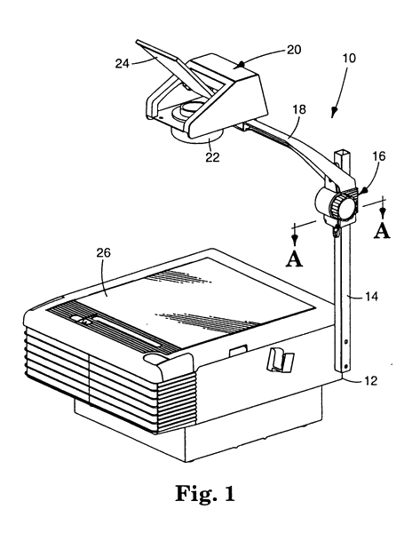
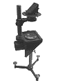
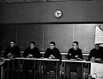

<!doctype html>
<html>
<head>
	<title>TransparenCSS</title>
	<meta http-equiv="Content-Type" content="text/html; charset=utf-8">
	<script src="http://ajax.googleapis.com/ajax/libs/jquery/1.8.1/jquery.min.js"></script>
	<script src="http://cdnjs.cloudflare.com/ajax/libs/underscore.js/1.4.4/underscore-min.js"></script>
  	<script src="jquery.transit.min.js"></script>
  	<script src="jquery.virtual-events.js"></script>
	<link rel="stylesheet" type="text/css" href="style.css">
</head>
<body>
	<script id="slides" type="text/template">
		<div>
			<div>
				<h1>The Overhead Projector</h1>
				<p></p>
				<p><small>A Short History</small></p>
			</div>
			<div>
				<h1>Projection Apparatus</h1>
				<ul>
					<li>Created by Jules Duboscq in 1880</li>
					<li>Also called a viewgraph</li>
					<li>Used in the United States Military Academy at West Point</li>
				</ul>
				<p></p>
				<p class="footnote">Ref: http://americanhistory.si.edu/mobilizing-minds/overhead-projectors</p>
			</div>
			<div>
				<h1>Transparencies in School</h1>
				<p>
				
				<ul>
					<li>Developed by 3M in the 1960s</li>
					<li>Became popular as a teaching aid due to...</li>
					<ul>
						<li>Technical improvements</li>
						<li>Government funds</li>
						<li>Advertising</li>
						<li>Teacher experience</li>
					</ul>
				</ul>
				</p>
			</div>
			<div>
				<h1>TransparenCSS</h1>
				<ul>
					<li>Developed in 2013</li>
					<li>Technology + Nostalgia</li>
					<li>Best in Webkit browsers</li>
					<li>Realistic adjustable focus!</li>
				</ul>
				<p></p>
			</div>
			<div>
				<h1>Conclusion</h1>
				<ul>
					<li>Fork me on GitHub</li>
					<li>Follow Pedago</li>
					<ul>
						<li>http://blog.pedago.com</li>
					</ul>
				</ul>
			</div>
		</div>
	</script>

	<div id="container">
		<div class="slide-content-container"></div>
		<div class="inner-shadow light"></div>
		<div class="inner-shadow dark"></div>
		<div class="highlight"></div>
	</div>

	<div id="projector"><div id="grabber"></div></div>

	<div id="controls">
		<button type="button" class="btn btn-left"></button>
		<button type="button" class="btn btn-right"></button>
		<span class="slide-number"></span>
	</div>

	<script src="slides.js" type="text/javascript"></script>

	<a href="https://github.com/barillax/transparencss"></a>
</body>
</html>